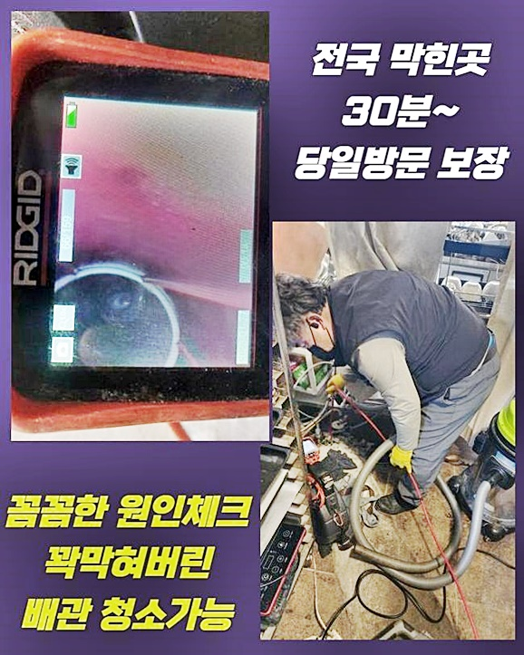
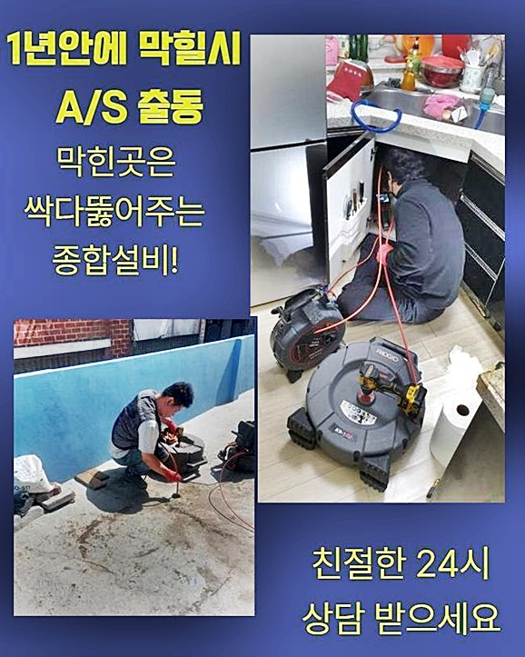
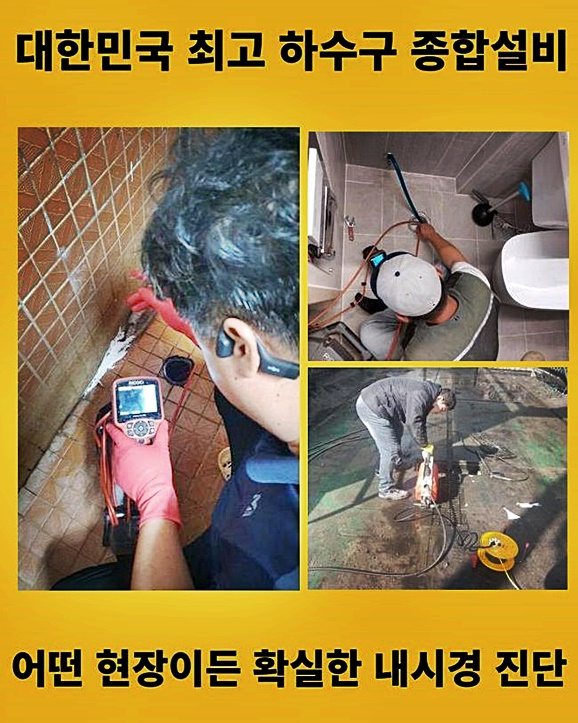
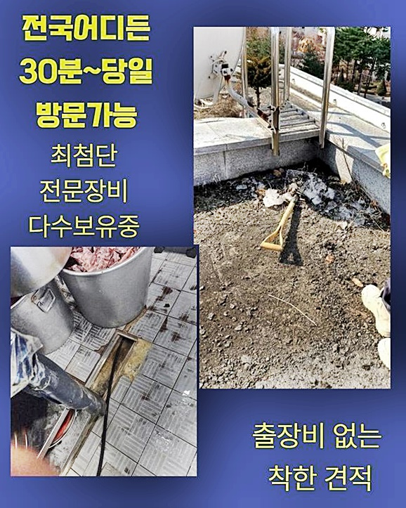
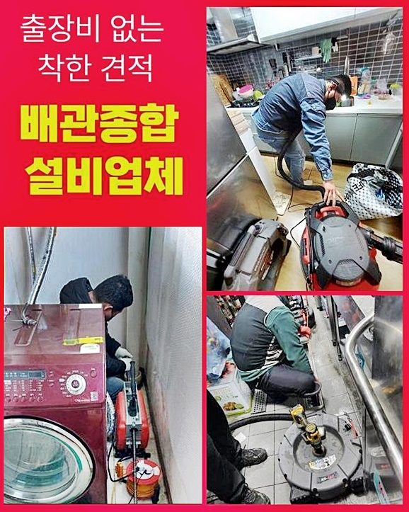
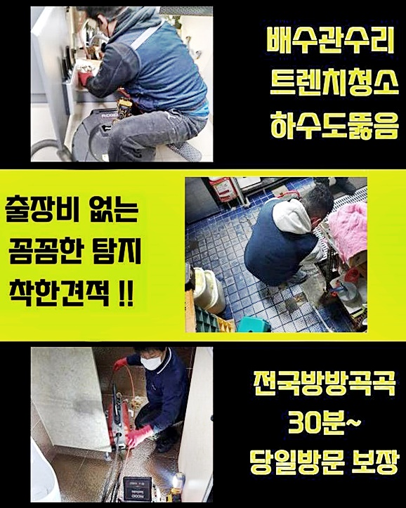

🏠 안산 일동변기막힘 사동 배관뚫기 설비출장
용인시 처인구 배관막힘 전문 시공 후기

📋 작업 개요
- 위치: 용인시 처인구, 수원시 영통구, 화성시 동탄
- 서비스 유형: 배관막힘, 하수구청소
- 작업 일시:
- 업체명: 하수구수사대 (010-5615-2118)
🔍 문제 상황
안산 일동변기막힘 사동 배관뚫기 설비출장
보통 화장실 영역은 활동하는 곳 중에서 수도시설을 가장 빈번하게 활용하는 곳인데요
안을 관찰해 보면 바닥의 그레이팅 시설 개수대와 같이 여러 물과 관련된 설비가 장착된 점을 알아차릴 수 있습니다
그렇기에 물소비가 많은 욕실 이용 후에는 하수구가 마비되는 상황이 불가피하게 발생될 수 밖엔 없는 지점이라고 할 수 있는데요
잘 배수되다가 어느 순간 물 내려감이 중지됐는데 나아질 기미가 없어서 저희를 찾아주셨죠
고객님을 찾아뵙고서 어느 수준으로 막혔는지 검사를 시행해 봤더니 배관 겉에서 물이 전혀 나갈 낌새가 없이 가득 차오른 상황이었죠
수돗물을 틀고 한참 지나면 느릿느릿 물이 빠지는 모습을 보긴 했는데 아예 고장 수준에 이르러서 물이 머무른 시점은 불과 얼마 안 된 변화라고 전해주셨어요
화장실에 부착된 세면대는 씻으면서 때라거나 세제 찌꺼기나 모발 등이 빠져버려 통로가 봉쇄될 확률이 매우 큽니다
화장실에 진입하는 것도 전혀 허락되지 않은 상황이라 속히 욕실에 빚어진 오류를 해소하기 위한 작업에 뛰어들게 됐네요
청소용 기기를 먼저 들이대기 전에 내측의 현황과 상태를 낱낱이 파헤치면서 업무 계획을 세웁니다
세면 구조물과 이어져있는 파이프가 벽 안으로 깔려있는 상태로 보였습니다

🔎 원인 분석
💡 전문가 진단: 정밀 진단 장비를 사용하여 슬러지의 고착 여부를 판명하고 타격/세척 작업을 실시했습니다.
외부로 드러나는 측면에서는 배관 일부라도 공개된 것은 아니라서 상황에 따라 굴착이나 추가 공정이 발생하기도 한다는 점을 공지해 드렸습니다
건물의 연식에 따라서 구조물의 특성에는 차이점이 보입니다
근래에 건설이 된 신축 아파트 케이스는 배수로들이 마감재 안으로 숨겨진 채 신설되었는데 악취도 유발되지 않고 더불어 외형적으로도 미니멀하게 다듬는 겁니다
무엇이 문제인지를 분별하기 위해서는 세면대 부속품을 먼저 시설물에서 분해한 이후 디테일한 검토를 해보겠습니다
오늘 착공했던 지점은 건물이 세워진지가 매우 예전인 부분은 아니었기에 파이프가 엄청나게 부식되지는 않은 상태였죠
간혹 준공일이 매우 몇 십년이 경과했다면 부품까지도 녹슬고 부식해서 센 물살이 나가는 것만으로도 물마개가 훼손되어 버리거나 이탈되는 경우도 있어요
물길이 트이지 않은 현상이 오래 존속하면 함께 설치된 구성 요소들이 다치기 좋은 환경으로 확산될 경우가 많습니다
내측에 끼인 물질에 따라서 다른 양상을 띨 수 있지만 만약에 음식쓰레기들로 봉쇄된 예시라면 습한 환경 내에서 균이 생기면서 불쾌한 구린내를 내부에 확산시켜요
냄새까지 수습해야 하고 배관 자체의 형태에 따라서 오히려 악화되어 버릴 수 있으니 속성에 대한 상세한 진단을 이어가야 합니다
내측에서 벌어지는 일을 살펴보니 배관이 꼬여있는 상태로 형성되어 있었기에 해당 집 안에서 나아질 방향이 안 보이면 아랫세대의 허락을 구한 뒤 천장탈거 후 접근하는 게 필수조건일 때가 있습니다
웬만하면 한 세대 방문만으로 모두 수습을 끝낼 수 있도록 열성을 다할 것이며 상황에 대한 판단을 하기 위해 탐사를 위한 장비를 켜서 정보를 파악해야 하죠!

🔧 작업 과정
팝업 부속 외관에도 이물질들이 대거 빈 공간없이 메우고 있었네요
세수 등의 활동으로 자연탈락한 각질들과 모발이나 비누 잔해들이 소량씩 층을 이루며 적립되다가 결국 여백없이 채워진 거였죠
세면대뚜껑 표면에 이물질이 딱딱하게 말라붙어서 제거가 안되면 이걸 신규 제품으로 교환하거나 가볍게 솔질만 해줘도 물의 이동성이 확보됩니다
세면대의 수돗물이 흐르지 못하는 측면은 세면대 물마개 자체가 저지된 상황과 전체 관로에 불순물이 쌓인 경우로 분할할 수 있습니다
오늘의 장소는 파이프까지 장애 인자가 자리잡은 현황을 감지했고 따라서 깊숙한 곳까지의 세정이 반드시 필요하다 생각됐어요
여기서도 리치가 나올 거 같아서 천장 방면으로 뚫어야 할 불가피한 상황은 아니어서 세면대에서 직접 진입하여 위생관리만 해주어도 얼마든지 막힘이 풀려나갈 것이라는 긍정적인 예측이 도출됐습니다
실제로 작업에 돌입해봐야 확신을 가질 수 있어도 대략적으로 관찰로 얻은 정보로는 고객님의 댁 안에서 통수가 이뤄질 것 같았네요
조사를 통한 내용은 의뢰인분께도 신속하게 안내를 드리며 작업합니다
스케일링 장치로 하수구의 장애를 빚어내는 오물들을 처리해야만 할것입니다!
오염원의 농도가 많았기에 완전한 소강을 위해선 청소작업의 재실행이 필요했어요
작업지의 특징에 따라 기간은 소폭 변화하는 게 일반적입니다
오염물이 집단을 이뤄 말라붙어있거나 양이 과중하다고 느껴진다면 투입되는 시간이 확대될 수 있습니다
순차적으로 표면부터 붙어있는 오염물질을 점진적으로 집중하여 소거해 나가면 결국 깨끗해 집니다
회전하는 청소 도구와 배관전용 카메라는 유연하고 가느다란 튜브로 제작되어 있으므로 같이 투입되며 상황을 추적해 나가면서 장비를 핸들링할 수 있어요!
작업진행도가 몇 프로인지 끊임없이 관찰하면서 작업을 수행할 수 있기에 답답하게 중단된 측면을 쾌적하고 개운하게 변모시키게 되는 겁니다!
하수관의 장애를 촉발시키던 전적인 걸림돌이 싹 사라졌어요
이전에는 자리를 차지했던 통로를 봉인했던 요소들이 종적을 감췄기에 느릿하게 빠지던 물도 화끈하게 내려가게 됩니다
작업의 완성도를 확인하려고 배수테스트를 진행하면서 기능적 회복이 잘 됐는지도 빈틈없이 살펴보면서 완수를 알리고 있으며 만일 별도의 결함이 감지될 때에도 후속작업까지도 책임지고 제공을 해드린다고 약속드려요


✅ 작업 완료
세면대의 근방에 잔여물들이 조금 남아있고 부식된 곳이 있어서 제거제를 뿌려서 정리정돈하며 위생적으로 마무리해요
장소의 특성을 반영해 작업 절차가 변동이 있으므로 저희 업체는 사전 견적만으로 최종가를 제시하기는 어렵습니다
여러 장치들을 비롯한 샅샅이 조사한 후에 어떤 작업이 필요한지를 노선을 확정한 다음에 세부적인 가격을 계산할 수 있게 됩니다!
추가적인 의문이 남아 있다면 방문하여 점검하는 도중에도 대화를 요청해 주셔도 좋아요
노하우가 많은 전문가가 어떤 과정을 수행하는 중인지 브리핑을 해드리며 일하고 내부에 설립된 시설물의 구조적인 문제가 발견되고 담당한 배관 이외의 이슈가 관측되는 시점에는에도 그 부분까지 보완해 드리니 그저 내맡겨주시기를 바랍니다



⚠️ 하수구 배관 막힘 예방 및 관리 가이드
- ✅ 머리카락, 비닐, 물티슈 등 물에 분해되지 않는 이물질은 절대 흘려보내지 마세요.
- ✅ 기름기 많은 식기는 설거지 전 키친타올로 먼저 기름때를 닦아내세요.
- ✅ 주기적으로 배수구에 뜨거운 물을 가득 부어주어 유지방 고착을 방지하세요.
- ✅ 작업 후 1년 이내 재발 시 무상 A/S 보증 서비스를 제공합니다.
💡 핵심 정리
- 확실한 장비 작업(내시경 점검 및 샤프트 스케일링)으로 원인을 뿌리 뽑습니다.
- 작업 후 1년 이내에 동일한 부위 재발 시 100% 무상 A/S 서비스를 보장합니다.
- 서울 · 경기 · 인천 전 지역에 24시간 언제든 긴급 출동할 수 있도록 항시 대기 중입니다.
❓ 자주 묻는 질문 (FAQ)
🚨 용인시 처인구 배관막힘 문제로 고민이신가요?
정확한 원인 진단과 확실한 시공으로 재발 없는 해결을 약속드립니다.
24시간 긴급 출동 | 서울 · 경기 · 인천 전지역 | 1년 내 재발 시 무상 A/S